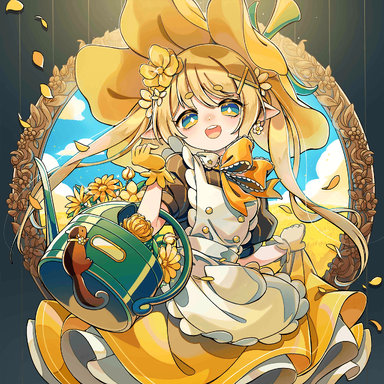

AP向杂谈，记录一些咱们对一些曲子的评价。
碎碎念
Rating
单曲rating：
| 1010000 | +3.6 |
|---|---|
| 1008000 | +3.4 |
| 1007000 | +3.15 |
| 1006000 | +2.9 |
| 1005000 | +2.65 |
| 1004000 | +2.4 |
| 1000000 | +2.0 |
| 980000 | +1.0 |
| 950000 | +0.0 |
| 一般AP的分数为109500以上，大概为+3.55~+3.6这个区间，即使低准度AP，也只比理论少+0.05左右，因此对于一般人而言AP以后推准度的收益不怎么高，前期推到AP即可。 |
总
虽然rotaeno去掉了r10机制（不去掉r10的话根本推不到理论值rating，总不能连续理论十次翠杜吧）,但是为了弥补去掉r10的影响，b10的权重被提升了，也就是说b10的影响会很大。
针对rating机制的小教程
萌新阶段：rating低于13
rating=13对应：
10.0: 100.6X%
11.0: 100%
12.0: 98%
一般而言低于98%说明基本不会、越级了，低于100%说明较为不熟练。因此前期打歌应该以100%作为目标。
由于rotaeno独特的旋转机制，即使是其他音游的转生人也需要较长的时间才能适应rotaeno，因此萌新阶段的主要目标就是熟悉rotaeno。真萌新可以从1难度，转生人建议从2难度和3难度开始。
配置上，3难度才有紫键，4难度才有夹心红键，因此尽早打4难度是有必要的。
这一阶段打打10及以下的曲子就可以了。
rating：13~14
rating=14对应：
10.0: AP
11.0: 100.6X%
12.0: 100%
因此从13到14这个阶段的主要目标就是打10级（包括10+）和11级的歌曲，尽可能推到AP或者1~2far。这一阶段可以试试越级打11+或者12，适当的越级有助于飞升。
rating：14~15
rating=15对应：
11.0: AP
12.0: 100.6X%
12.5: 100.4X%
13.0: 100%
从14开始就要逐渐推11+和12了，这一阶段需要尽可能将11+和12推到100.8%，甚至可以试试AP掉一些简单的12。一般AP个两三首水12（比如第一章的俩水12.4）就可以升到15了。
rating：15~16
rating=16对应：
12.4 理论
12.5 100.9% ≈AP
12.6 100.8%
12+ 100.6%~100.8%
13 100.4%以上
想要上16，方法就一句话：AP12，至少也要推到100.8%。
具体而言：15~15.5: AP 11+，并且将12尽可能AP或者准AP
15.5~16.0: AP 12，AP一堆12，可以尝试一些简单的12+或者13。
2025.01.15
其他碎碎念
据说2.6.0版本要大改定数，于是在2.6.0更新之后本篇内容需要全部重写QAQ。
2025.01.24
喜报，2.6.0定数全改rat机制全改，本篇内容等待定数测出来之后需要全部重写。届时将会把该文档保存备份。
2025.01.27
13
13这边不细分定数了。
GALACTIC WARZONE
定数13.3。
只考虑AP难度的话，也是时代的眼泪，并且和下边翻转世界不一样的是，银河战区是纯技巧谱，对于底力要求贼低（不如很多12.6），比较好推分，同时13.3的定数很高，因此适合大家嫖分。
主要是考查技巧的一张谱，很多配置具有开创性意义，奠定后世各种坑爹铺面的基础，但是本身对底力要求太低了，对于技巧的要求也不是特别高（尤其是在玩家们被后世各种妖魔鬼怪的磨炼中逐渐升级的情况下），因此13.3确实虚低，只能说是时代的眼泪了。
不过虽然这样说，但是AP难度也是挺难的，目前3g2m，距离AP还遥遥无期。
个人主观定数13.1。
顺带一提，刚听的适合感觉本曲听起来有点怪，但后边越打越上瘾。可惜arcaea联动没把银河战区搞过去。（不过隔壁联动选的几首质量都挺高就是了，反倒是rotaeno这边选的都比较……抽象）
封面帅捏。
2025.01.08
Inverted World
定数13.0
尽管作为老魔王已经成为时代的眼泪，但是不管是推分还是AP实际上都不怎么容易。主要难点在于较为高速的单点，和后边比较难读谱的一堆交互。中间部分的交互的节奏大致是快慢快慢交替的，没有休息的时间，所以说一旦节奏乱了很容易爆far。尾杀的交互需要移动手指，很容易打掉。
纯底力铺，比较吃底力的一个铺子，底力不够的话交互打不了一点，但是由于没什么技巧要素，底力上来的话就是儿歌，所以说这就是老时代被称为魔王，而在新时代被称为儿歌的原因。
实际难度应该算是中位12+，12.8~12.9这样，但是考虑时代地位，定13.0也不是不行，毕竟隔壁arcaea的病女在11的位置上也坐了n年。
个人主观定数12.9，但是作为老魔王，定13.0并没有什么不妥。
目前已FC，希望早日AP。
比较离谱的是，隔壁arcaea完美还原本家，只要底力足够会打天地交互就完全是大水谱，个人认为arcaea那边的翻转世界也是最简单12.7，难度甚至不如同曲包的俩10。
顺带一题，贴贴是好文明。曲子本身质量也很高，作为初代魔王曲可谓实至名归。
2025.01.08
Eschatology
好听好玩。
据说当年作为12.9被众人认为难度太低，后边升格为13.0，现在感觉定13.0又稍微有点高了（不过还是比IW和IF难的）
更偏向底力铺，交互什么的对于底力要求比较高，并且1603的高物量也挺考验玩家的稳定性的。但是配置上并没有什么难的，都是一些比较基础的交互，配置的难度感觉也就和咲く星々差不多。
目前已FC，爆far爆了不少，期待早日AP。
个人主观定数12.9 。不过感觉已经打了的这几个13.0都不难欸，是不是13.0本身就不难呢？
2025.01.08
Invisible Frenzy
时代的眼泪？
挑战模式极其坑爹，wacca的主题完全读谱不能。解完之后突然又感觉没啥难度……
更偏技巧的曲子，主要难点在于开头的变方向交互、中间比较脱线的红键等等。红键容易爆far。别的难点没什么，对于底力要求不高，感觉AP难度不高但现在还没AP。
已FC，红键爆了1个，还有两处失误，期待早日AP。
个人主观定数12.8，AP难度感觉真不高。
2025.01.08
性了，已破防。
整体难度远不如同曲包的12.9（尤其是Silentphobia），你悔改罢。
2025.01.10
12+
12.8
In a Diabolic Manner
物量只有752，感觉人均AP，超级榨汁姬。
主要难点是跳拍，理论难度会比AP难度高很多。AP不难，只要把双押串打好就可以。
2025.01.07
个人主观定数 12.5，AP难度不如12.6。
2025.01.08
Avataar ~Reincarnation of Kalpa~
比较好推分好AP的12+，因为是比较古早的曲子所以说有点虚高，但是压力还是给足的。
主要压力在于长交互、蓝紫组合和叠键，还有非常坑爹非常初见杀的量子叠加态黄键，刚打的时候完全理解不能。
AP难度差不多算是12.6~12.7这样，因为是比较早的曲包所以说会比较偏高。
个人主观定数12.7。
2025.01.08
Kakuriyo
我嘞个大雷。
尽管实际难度比同曲包的12.6更难，但是不知道为什么咱们打这首的分数更高。
目前本曲超出我们的能力范围，等到以后再推推。
2025.01.10
12.7
Manifold Hypothesis
好听好玩。
标准的12.7，AP难度有点难。主要难点在于考点较多，对稳定性要求高，前部分考旋转和红点+长双押稳定性+叠，尾杀考5连交互。
2025.01.07
个人主观定数12.7，可作为12.7的标准。
2025.01.08
DUAL BREAKER XX
感觉有点水的12.7 ，难点在于旋转角度大，前边的部分有一组4个note的纵连需要小小的底力，后边有组速度快的2x5连交互。
AP难度不打，鞭尸成功。
2025.01.07
个人主观定数12.6。
2025.01.08
12
12.6
9876734123
中下位12.6。
底力：多次叠键，还有目前本游见到的第一个双押叠键。 不算很难的交互，还有一段比较短的双押接交互的配置。
旋转：有旋转幅度较大的黄和红。
AP难度在12.6中算简单的。
2025.01.07
主观定数12.5.
2025.01.08
MAGENTA POTION
水12.6，难点主要在于紫+黄快速滑动和蓝+黄快速滑动，以及较长+无聊的铺面和较高的物量（1582）需要一定的稳定性。
几乎不需要底力，算是中下位12.
2025.01.07
主观定数12.4~12.5，12.6虚高了。
2025.01.08
Cynthia

标准的12.6，12上位曲。这首居然是我们第一首AP的12.6，令人感叹。
底力：一堆叠，一堆长交互
旋转：有个贼容易爆far的黄+划+红的组合
技巧：很坑爹的蓝+红红红红+蓝的组合，尤其是后半部分有个这个配置加交互的组合，有点反常。
这首居然是我们第一首AP的12.6，令人感叹。AP难度属于12中比较难的了。
2025.01.07
主观定数12.6下位。
2025.01.08
咲く星々alpha
神曲神谱！
神曲神谱！！！
神曲神谱！！！！！
最上位12.6，第三章刚更新的时候一堆人嚷嚷这首难度堪比12+，只可惜后边又出现了不少比较逆天的12。
全曲充斥着各种双押组+交互+夹心划的组合，难度直逼12+。比较卡手的地方还有开头和最后的旋转3note单点，以及 蓝 蓝 +蓝 划组合。中间不少乱旋转的黄和红也有一定难度。至于什么5交互在本曲中都算是基本配置了。但是，尽管难度很高，但是打起来贼爽，属于大爽曲，让人欲罢不能的感觉。质量如此高的铺面真的难得。
全曲从头至尾都存在难点，几乎没有休息段，超多的交互和高达1747的物量对于底力和稳定性造成了较大的挑战，本曲AP难度高于部分12+（比如上边已经AP的三首），只能说咱们能AP这首真的挺不容易的。
不管是歌曲本身还是铺面还是曲绘都让人满意的歌曲可不多见。
2025.01.07
主观定数12.7，作为12.6还是有点难了。
2025.01.08
白菊 -shiragiku-
从日本的wiki拿的图，中文wiki还没更新。
最上位12.6，AP难度很高，有传言本曲是12.7内部降级为12.6的。
全曲虽然时长很短（1:35），但是充斥着各种交互，主要难点在于交互完无缝衔接黄紫的组合，还有尾杀的2note短交互+几个划键+双押的组合，需要研究。
因为物量较低（1073），只要会打交互，把两处难点研究完的话就距离AP不远了，但AP还是有一定难度的。
2025.01.07
主观定数12.6上位~12.7，虽然作为12.6偏难但是感觉谱师有意控制了难度。
2025.01.08
Alive
已性。
标准12.6，推分难度不高，难点在于一前一后。前边有个一边单点一边对红键+交互的组合，容易爆far，后边尾杀交互老是爆far，看分析说是这边有个十六变八，容易爆far，在这里性了俩次。
希望早日AP。
2025.01.07
主观定数12.6，可以作为12.6的标准。
2025.01.08
Echoes of the Forest
这tm是12？？？？？？？？？？？？？？？
个人感觉比咲く星々难，个人目前打过的最难12，全程高能，各种叠各种旋转交互各种超大幅度旋转，配置比咲く星々更像12+，整体难度和同曲包的12.8有的一比，当时范式新曲包更新的时候，这首差点把我给打自闭了。
等以后有能力了再打这首。
2025.01.07
主观定数12.8，滚去12+，各种配置完全不像是12所有的。
2025.01.08
12.5
很奇怪的是，在咱们已买的12.6除了一首性一首打不了以外其他全部AP的情况下，12.5这边居然没一首AP的，离谱。
Alfheim’s faith alpha
萌新恶魔，当时解第三章的时候给了我小小的新时代12震撼。
主要难点在于快速滑动幅度较大，最难的地方在于夹心蓝+紫的旋转交互，其次还有不少蓝+黄条交互，挺卡手的。
等有时间再推一推，看看能不能AP。
顺带一提，曲好听谱子好玩铺绘不错，平心而论rotaeno主线包质量都很高。
主观定数12.5~12.6。对于没接触过各种妖魔鬼怪的人而言可能压力会很大，但如果经过各种13的拷打后体感就会好很多。
2025.01.10
Heaven’s Cage
著名大粪铺。
主要难点在于著名的红条+蓝+紫，其余部分难度不大，只要注意开头比较活跃的红条就行。
这首估计会放置了。
主观定数：12.6，体感难度完全取决于你会不会打那个sb配置，不会打就是12.6~12.7。
顺带一提曲子本身挺好听的。
2025.01.10
12.4
12中曲数最多的一个定数，内部的歌曲胡乱无章，难的有堪比12.6和12.7的Cosmogyral、Turning POINT等等，简单的有AP难度堪比10~11的Aqua Stars等等。只能说12的上限和下限都在这个定数里了。
Aqua Stars
好听但是水。
第一章的。物量只有529，AP有手就行，注意本曲较慢别爆far就行。理论难度或许会难点，但物量只有529，也不会比其他12难多少的。
水12.4，旧时代的眼泪。
2025.01.07
主观定数10，只能说时代的眼泪了。
2025.01.08
Re-waked from Abyss
好听但是水。也是第一章的，也是12.4，难度比上边的大不少，但AP难度也只是从10变成了11+而已。配置很基础，基础到很多11+都比这首难。
只能说第一章的情况都是这样，歌质量非常高，一首比一首好听，整体质量非常高，但奈何铺太水了，魔王IW在这个时代都成儿歌的情况下，其他几首更是水中水，只能说完全是时代的眼泪了。
希望官方未来能搞个对标beyond的更难的级别，重振老曲。
2025.01.07
主观定数11，时代的眼泪。
2025.01.08
Brave My Soul
好听好玩。
标准12.4，简单点在于Ⅳ没有红键，难点主要是点点点+旋转点点点。底力铺，没什么比较难的配置，全程难度较平均。
2025.01.08
主观定数……感觉这个标准12.4有点不对劲，被后边那几个逆天12.4打破防了。
主观定数12.3。
2025.01.08
Blastrick
第一首AP的12.4，泪目。
好听好玩，标准12.4，配置比较基础但考的比较多，难点在于旋转幅度较大的红和黄，还有几个旋转双押。
配置对于刚接触12的萌新而言还是挺难的，当年居然第一首AP的12就是这首，泪目。
2025.01.08
主观定数12.3。
2025.01.08
Secret Illumination
好听好玩。
标准（怎么又是标准？）12.4。旋转转的非常爽，难点在于旋转交互的定位，AP难度不算很高。
2025.01.08
主观定数12.3。
2025.01.08
with U
这才是真正意义上的标准12.4吧。
难度不小，属于中上位12，难点在于紫+黄的快速旋转滑动，一组同方向的rotate（初见杀），后半部分的蓝+红+紫配置（有点锁手，并且紫容易爆far）。
不过还是2pc AP了。
2025.01.08
主观定数12.4，算是12.4标准曲？
2025.01.08
Turning POINT
不是哥们，你12.4啊，我还以为你12.6呢。
好听好玩，难点在于超慢的交互和超慢的尾杀长交互，对于稳定性差的人来说很不友好（比如我）。中间还有一段交互+红+紫的配置不太好打。
难于上边的12.4的，光凭尾杀长交互就可以定为12.5或者12.6了。
2025.01.08
主观定数12.6，对于慢交互不会打的人来说妥妥12.7。
2025.01.08
Cosmogyral
有点小难的12.4，慢速段容易初见杀爆far，愿早日AP。
2025.01.08
主观定数12.5，作为12.4还是虚低了。
2025.01.08
Shattered Sky After Rain
好听好玩。
有点小难的12.4，最大的难点在于后边的一个蓝蓝紫的三连单点，我不是很擅长这个配置。
2025.01.08
主观定数12.4。
2025.01.08
Infection
已破防。
整体难度属于有点小难的12.4又不至于特别高，但是考点都是超级容易爆far的那种，比如变速，比如旋转交互，比如快速旋转的紫+短红条，还有比较锁手的紫划后边跟着蓝+黄条的组合。整体难度不至于太高但就是容易掉，反正现在要么爆loss要么爆far，已破防。
以后有缘再推这首。
2025.01.08
主观定数12.4~12.5，作为12.4难度有点低。
2025.01.08
My Heaven (Magical Mix) feat. kuripurin
考点不少，交互、夹心黄键、双押串都有一定难度，结尾尾杀的蓝+紫也比较卡手，并且那个紫的判定挺严的，死在这上面了。
希望早日AP。
主观定数12.4
2025.01.10
Arbitration
作为12.4虽然也虚低，但是比第三章其他几首好上不少。
底力主要在于几段交互，开头的5连交互不知道为什么塞了个蓝+黄的组合进去，有点卡手。中间有不少紫+黄条小旋转的配置，最难的地方在中后部分的单手紫+黄条旋转单手单点，很考查定位和协调性，在这上边死了不少次，挺过最难部分就AP了。
除了最难段和交互以外没啥难度，谱师很明显是有意控制难度的。
主观定数12.5，还是比上边的12.4难点的。
顺带一提，曲子好听，铺子本身除了卡手段以外，打起来也不错，尤其是开头的红+黄段，个人非常喜欢。
2025.01.10
Ego Eimi
不管是arcaea端还是rotaeno端，咱们和这首都不怎么对付。
主要难点在于旋转幅度很大，动辄90~180°旋转。中间还夹杂着大量的交互。
祝愿早日AP。arcaea包的那几首都没啥推分的动力（除了火神），QAQ。
主观定数：12.5
2025.01.10
Hold Your Fire (Radio Edit)
新时代12.4。
含有大量初见杀配置，各种交互各种叠，对于底力要求挺高的，还有很容易爆far的变速段。
这首感觉目前还AP不了，等我们底力上来了再推推。
主观定数12.6。
2025.01.10
12.1
Blackhole
不是哥们，你是什么12.1？？？
不管是旋转幅度较大的单点还有尾杀交互，都不是12.1该有的样子。
在我萌新时期给我推破防的曲子，虽然现在也AP不了就是了。
我认为rotaeno需要赔偿我的精神损失费！
主观定数：12.5，不管怎么说12.1也还是太奇怪了吧。
顺带一提，曲子好听曲绘好看，就是给人一种某galgame小男娘男主的感觉。
2025.01.10
11+
静寂に憂う
难度11.7
新时代的11+，黄条中间夹杂蓝、紫那段比较卡手，蓝蓝紫的配置也稍微有点卡手。刚买范式联动包的时候这首给我打破防了。
曲子好听。
2025.01.15
Huggy wuggy
难度11.8
好玩。主要考查旋转，旋转角度动辄180°，非常能体现rotaeno特色的一个铺面。
2025.01.15
Make up
难度11.9，11+上位。
高物量，堪称萌新杀手。
11
HYPERSYNTHETIC
难度：11.6
难点主要在于双押蓝+黄条/红条+双押蓝的配置，我不怎么习惯这个配置，容易被黄/红条锁手。
2025.01.14
今天不是明天
定数11.3
难点主要在于双押蓝+单黄+双押蓝的配置，直接接黄的话容易被锁手，推荐把黄当作蓝来打，这样会顺手点。
2025.01.14
Eternal calm
难度11:4
没什么特别的一首曲子。
2025.01.14
The Promised Land
难度11.6
开头和结尾是慢速段，需要注意。
2025.01.14
Awaken In Ruins
难度11.5
小心红键！前半段有一些夹心红容易掉，需要注意。别的没什么难点。
顺带一提，本曲在隔壁arcaea算是最水9+，人均能pm，即使从9.9降到9.7也还是虚高。
2025.01.14
Lullaby For an Android
难度11.1，v2.0.0（2024/05/30）更新的免费曲
什么新时代11，主要难点在于滑动幅度贼大的rotate，还有旋转4连单点，对定位要求较高。
不管是曲子本身还是铺面，表现力都贼强。
2025.01.14
Anthem
难度11.6，属于11上位曲。
开局的紫+黄条别搓！！！搓的话很容易掉。开头的打法是旋转来划紫键，先向上转，然后向下转，然后红rotate，然后重复。中间的双押+短交互对于萌新而言有一定难度。结尾红rotate旋转完之后立刻向蓝rotate方向旋转，否则结尾两个红键容易掉。
作为11，对技巧考查挺多的，我为了AP这首重开了好几次，QAQ。
2025.01.14
Chrysanthemum
难度11.5
变速，需要注意。作为11.5，物量仅有570，因此不难AP。
2025.01.14
Witches’ Party
难度11.2
这又是谁的部将，AP难度直逼12。
明天再打，今天撑不住了。
2025.01.14
铺面表现力很强。有较多的交互，还有坑爹的夹心紫键，很容易掉。
2025-01-15
K.Moe (VIP)
难度11.1
又是变速。开头部分有个加速，后边有个突然慢速。前半部分有一段节奏比较怪，萌新很容易掉。后边还有个长rotate，对于萌新来说也有点不友好。
2025.01.15
Snow Magic
难度11.0
是兽耳娘欸。
难度方面，都是基础配置。
2025.01.15
Aurora
难度11.3
又一个变速曲，你游怎么这么喜欢在小歌里写变速啊。 结尾的慢速交互比较容易爆，需要注意。
歌曲本身很好听。
PS：在游戏早期，该曲的难度IV谱面曾经是定级最低的难度IV谱面：8级，堪称定数欺诈。
2025.01.15
Converge
难度11.6，11级上位曲。
一上来又塞了个慢速，开局慢速单边蓝+黄条 单边紫键的组合，隔壁家小孩都吓哭了。后边则是交互的旋转双押，比较考验底力，堪称萌新杀手。
2025.01.15
Infinity Heaven
难度11.5
知名公交车曲，在rotaeno这边难度给的有点低，希望后边有更高难度。
除了旋转幅度比较大以外没什么太大的难点。但是！结尾又给塞了个变速段。
2025.01.15
Reverie
难度11.4
女人，你影响我打歌了.jpg
在11中偏难的一首，不管是2连单点、4连单点都比较考查底力，然后rotate段中有几个rotate后边还带了个孤立的红键，需要注意。
好听好看好玩好白，属于入坑神曲了。
2025.01.15
10
目前（v2.5.1，2025.01.14）本游戏的Ⅳ难度10级曲一共有9首，且全部都是免费曲。
Last Paradise
难度10.9，物量595。
主要难点在于rotate段，第一个rotate别转反了，萌新很容易转反。还有最后的慢速段容易爆far。
挺好听的一首。
2025.01.14
LostPuppet
难度10.8，物量790。
萌新杀手，有不少对萌新不友好的配置，比如突然加速的蓝键、较大幅度的滑动、rotate和红黄键的紧密结合、单边红单边黄、交互后接双押。本曲也是变速曲，感觉速度一直在变，容易爆小p。
曲子好听铺面好玩曲绘好看，属于萌新时期的神曲了。
2025.01.14
After Rain
难度10.8，物量491。
旅途的开始，萌新杀手，有不少对萌新不友好的配置，比如夹心键、一上来的交互。
曲子好听铺面好玩曲绘好看，属于萌新时期的神曲了。
2025.01.14
A Clock
难度10.8，物量737。
也有变速，怎么都喜欢变速。
2025.01.14
Pure White: Tale of Serissa
难度10.8，物量633。
好听，曲绘好看。
2025.01.14
Beautiful Days
难度10.8，物量465。
韩国大姐姐！suki！
铺面表现力很强。
2025.01.14
Aqua Theme

难度10.6，物量516。
第一章开门曲/主题曲，奠定整个Aqua星的主题，也给人以rotaeno的初印象。绝对的神曲，短短2:09就塑造起整个水世界的印象，令人印象深刻。
顺带一提，本曲也是少有的Ⅳ比Ⅲ难度物量低的倒挂曲。
2025.01.14
又一遍的歌
TSAR feat.永雏塔菲
难度10.3，物量738。
关注永雏塔菲喵！关注永雏塔菲谢谢喵！！！
what can I say。
作为新时代（v2.5.1）的10级曲，出现了一堆先进的配置，难度明显比同为10级的老曲难不少。光是蓝+短黄条旋转和蓝+划键融合体的配置就不是10级该有的配置。
至于歌曲本身的争议嘛……暂且不表。

2025.01.14
A Time for Everything
难度10.2，物量778。
曲绘+曲风注定它没啥人气。
2025.01.14
9
你游Ⅳ难度为9级的一共只有3首，其中两首在免费包。
심장병
直译：心脏病
难度9.5，物量532。
配置非常基础，没什么好说的。新人的第一首Ⅳ。
2025.01.14
別れの序曲
难度9.0，物量511。
虽然配置基础，但是是慢速曲，容易翻车、爆小。
2025.01.14